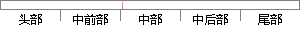

另一个需要的字段是服务器响应标识，当Rcode为0时，表示没有发生异常，返回正确结果；
片段位置图

相似结果|
1
原句片段：另一个需要的字段是服务器响应标识，当Rcode为0时，表示没有发生异常，返回正确结果；
相似片段 1：标识字段由客户程序设置并由服务器返回结果。客户程序...QR 是 1bit 字段:0 表示查询报文,1 表示响应报文...? 随后的 3bit 字段必须为 0。 ? rcode 是一个...
|
※ 片段修改建议 ※
近似词参考：- 需要：必要
- 响应：相应
- 表示：暗示 默示 示意 透露表现 表现
- 异常：非常 异样
- 正确：准确 精确
- 结果：成果 成绩 成效 后果 了局 效果
系统自动生成语句：另一个必要的字段是服务器相应标识，当Rcode为0时，暗示没有发生非常，返回准确成果；
注：本片段修改建议为系统自动生成，仅供参考。